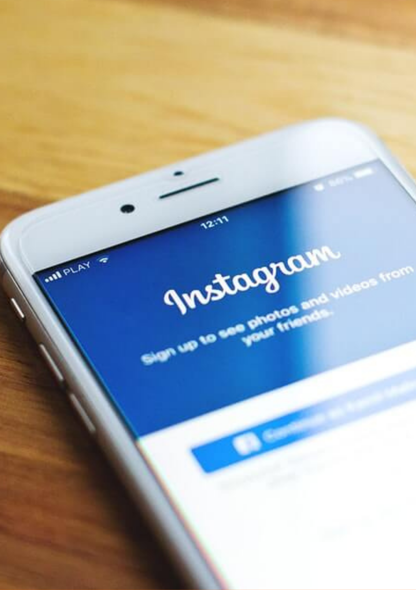

What is influencer marketing: How to develop your strategy
Blog by: Lance Diether M. Pelobillo Date: April 18, 2021

Blog by: Lance Diether M. Pelobillo Date: April 18, 2021
Just celebrities and a few devoted bloggers could be considered influencers a decade ago.
Now, it seems that social media influencers have risen to prominence, saturated the market,
and even become victims of fraud.
If you've done some prior research on influencer
marketing, you might have come across contradictory facts, with advice ranging from using
social influencers without hesitation to not using them at all.
As a brand, navigating influencer marketing tactics is more complicated than ever, but we're
here to help you make sense of it all.
Read on for our tips to determine if influencer marketing is for you.
Influencer marketing, at its most basic level, is a form of social media marketing that relies
on endorsements and product mentions from influencers–people who have a large social following
and are regarded as experts in their field.
Influencer marketing works because social influencers have a high level of confidence with their
followers, and their endorsements act as a form of social evidence to your brand's future customers.
Standing out in 2014 on Instagram was easier than today. If you were lucky enough to be featured on
Instagram’s featured page or your look was just distinctive enough, then your chances of being tapped
as an influencer were high. After enough brand partnerships, some have turned social media influencer
marketing into a full-time career.
With more than 500 million active users, Instagram is the most popular visual marketing platform in today’s
social media landscape. Digital marketers must be able to master Instagram marketing to connect with
Millennials, tell their brands’ visual stories, and stake out a presence on visual media. Mastering how to
connect with the Instagram market, however, is a challenge for many marketers.

Instagram influencer marketing is a natural entry point for brands that want to reach Instagram’s users, but
aren’t ready to launch a full-scale campaign. Consider partnering with brand influencers. Once you find a
content creator who is active in your niche, you can work with that individual to create content featuring
your product or service, and they share it with their audience. Ultimately, this can help drive awareness of
your brand, products and services – as well as lead to sales.
Another way to incorporate influencer marketing into your media mix is to focus on user generated content.
User generated content refers to content – such as Instagram photos – that is published by your fans or customers.
One example could be a picture of a customer wearing your product on her vacation to Greece that she has shared on
social media. Using a third party vendor, such as those incorporating user-generated content, consider curating
shoppable galleries of these real customer photos into visual tableaus for your website. When visitors see something
they love and click on a photo, it will bring them straight to the product page. Since this content serves as social
proof for your products, this can have a big impact on your bottom line. Marketing with Instagram photos your fan
base creates is a smart way to engage your audience and get more traction out of your existing visual library.
Marketing on Instagram requires an understanding of the platform and a commitment to determining how best to connect
with Instagram’s audience. Spend time mastering the basics of storytelling on the platform, understanding Instagram’s
general audience, and thinking about the best visual way to position your brand. Building your next social campaign
with a solid Instagram marketing foundation will position you for success and help your visual marketing campaigns gain
real traction.